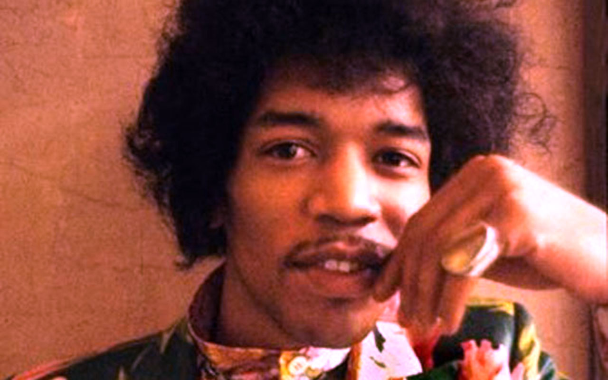
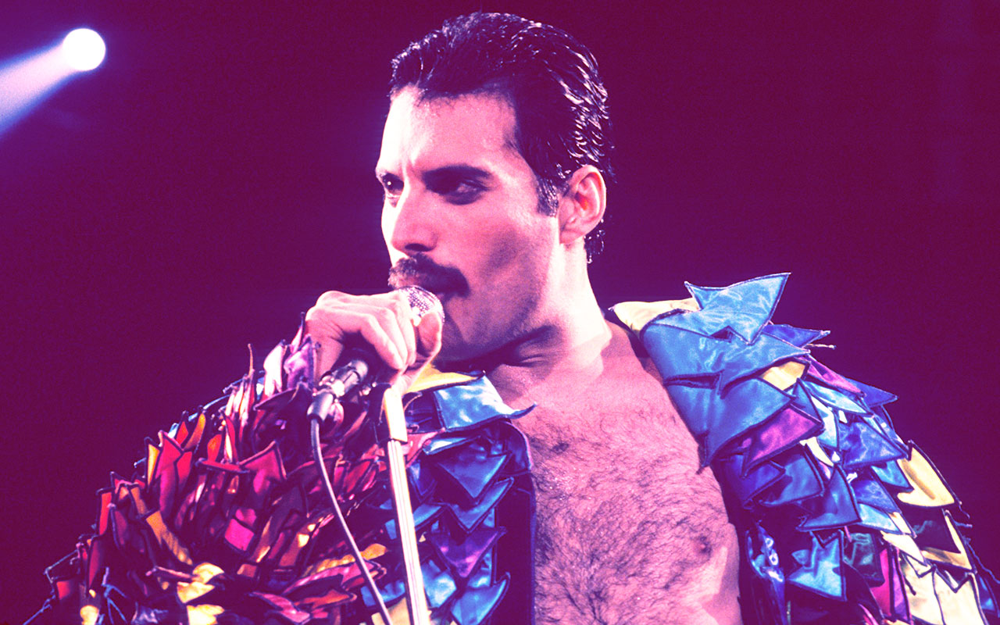
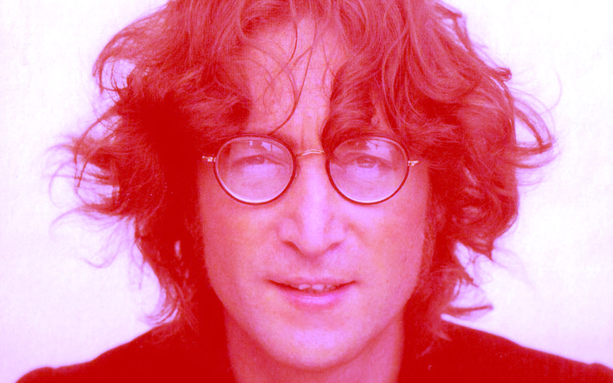
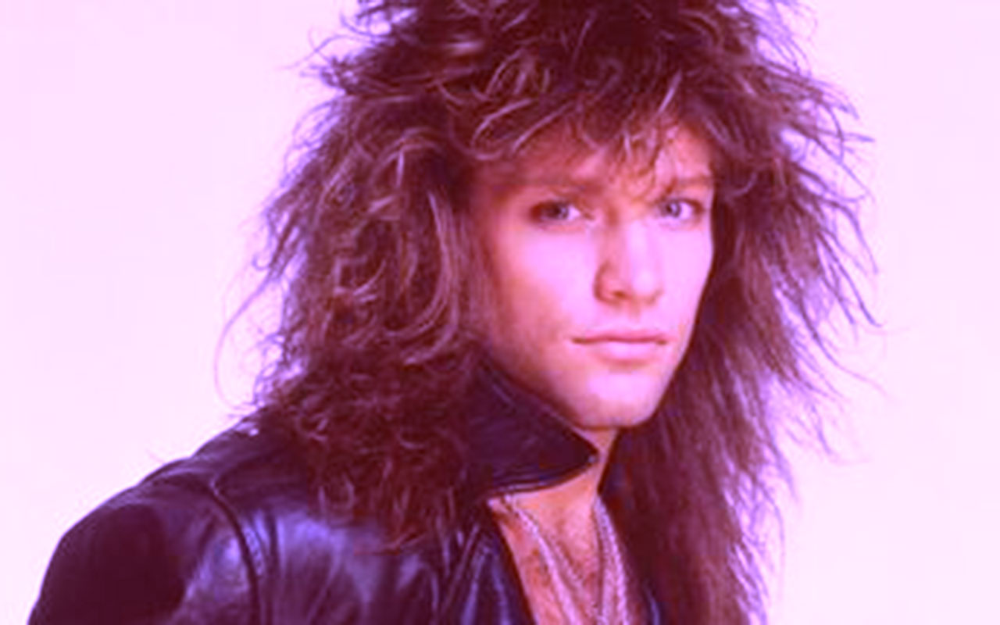
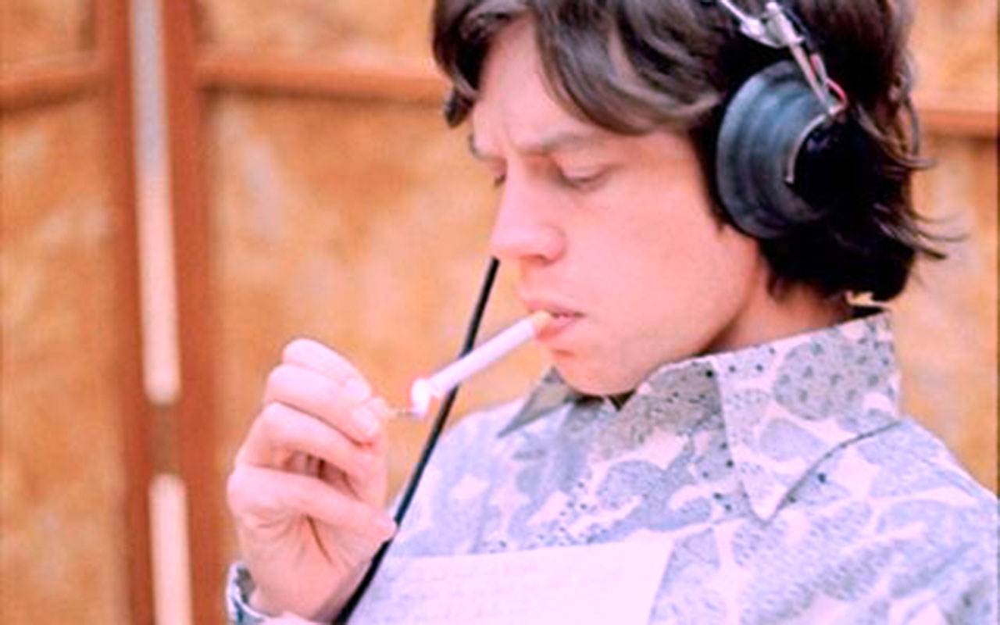

Jimi Hendrix (born November 27, 1942 - September 18, 1970) was an American rock guitarist, singer, and songwriter. Although his mainstream career spanned only four years, he is widely regarded as one of the most influential electric guitarists in the history of popular music, and one of the most celebrated musicians of the 20th century. The Rock and Roll Hall of Fame describes him as "arguably the greatest instrumentalist in the history of rock music". Hendrix is consistently ranked on lists of musicians who died too soon.
Freddie Mercury was born in Stone Town, Tanzania he later became a British singer, songwriter and record producer, known as the lead vocalist and songwriter of the rock band Queen. He also became known for his flamboyant stage persona and four-octave vocal range. Before he became a singer he has been in 3 other bands (Ibex, Sour Milk Sea, and The Hectics). He died in 1991 from AIDS/HIV.
John Winston Ono Lennon, MBE was an English singer and songwriter who rose to worldwide fame as a co-founder of the Beatles, the most commercially successful band in the history of popular music. He was assassinated by Mark David Chapman on December 8, 1980 at age 40.
John Francis Bongiovi, Jr., known as Jon Bon Jovi, is an American singer-songwriter, record producer, philanthropist, and actor, best known as the founder and frontman of rock band Bon Jovi, which was formed in 1983.
Sir Michael Philip "Mick" Jagger is an English singer, songwriter, and actor, best known as the lead vocalist and a co-founder of the Rolling Stones.
